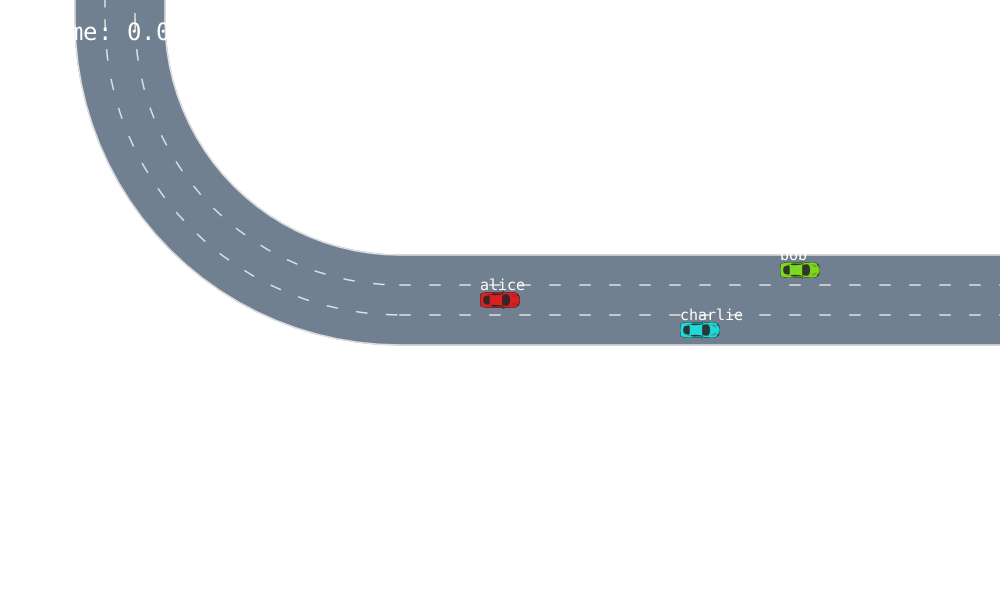
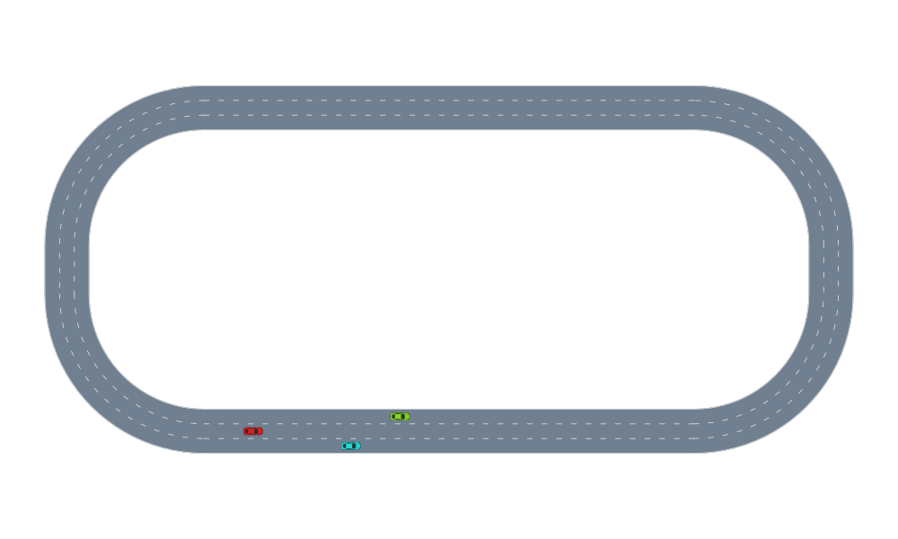

Driving in a Stadium

This example demonstrates a 2D driving simulation where cars drive around a three-lane stadium. The entities are defined by the types:
S-VehicleState, containing the vehicle position (both globally and relative to the lane) and speedD-VehicleDef, containing length, width, and classI-Symbol, a unique label for each vehicle
The environment is represented by a Roadway object which allows to define roads consisting of multiple lanes based on the RNDF format.
We load relevant modules and generate a 3-lane stadium roadway:
using AutomotiveSimulator
using AutomotiveVisualization
using Distributions
roadway = gen_stadium_roadway(3)
snapshot = render([roadway])
As a next step, let's populate a scene with vehicles
w = DEFAULT_LANE_WIDTH
scene = Scene([
Entity(VehicleState(VecSE2(10.0, -w, 0.0), roadway, 29.0), VehicleDef(), :alice),
Entity(VehicleState(VecSE2(40.0, 0.0, 0.0), roadway, 22.0), VehicleDef(), :bob),
Entity(VehicleState(VecSE2(30.0, -2w, 0.0), roadway, 27.0), VehicleDef(), :charlie),
])
car_colors = get_pastel_car_colors(scene)
renderables = [
roadway,
(FancyCar(car=veh, color=car_colors[veh.id]) for veh in scene)...
]
snapshot = render(renderables)
We can assign driver models to each agent and simulate the scenario.
timestep = 0.1
nticks = 300
models = Dict{Symbol, DriverModel}(
:alice => LatLonSeparableDriver( # produces LatLonAccels
ProportionalLaneTracker(), # lateral model
IntelligentDriverModel(), # longitudinal model
),
:bob => Tim2DDriver(
mlane = MOBIL(),
),
:charlie => StaticDriver{AccelTurnrate, MvNormal}(
MvNormal([0.0,0.0], [1.0,0.1])
)
)
set_desired_speed!(models[:alice], 12.0)
set_desired_speed!(models[:bob], 10.0)
set_desired_speed!(models[:charlie], 8.0)
scenes = simulate(scene, roadway, models, nticks, timestep)301-element Array{Scene{Entity{VehicleState,VehicleDef,Symbol}},1}:
Scene{Entity{VehicleState,VehicleDef,Symbol}}(3 entities)
Scene{Entity{VehicleState,VehicleDef,Symbol}}(3 entities)
Scene{Entity{VehicleState,VehicleDef,Symbol}}(3 entities)
Scene{Entity{VehicleState,VehicleDef,Symbol}}(3 entities)
Scene{Entity{VehicleState,VehicleDef,Symbol}}(3 entities)
Scene{Entity{VehicleState,VehicleDef,Symbol}}(3 entities)
Scene{Entity{VehicleState,VehicleDef,Symbol}}(3 entities)
Scene{Entity{VehicleState,VehicleDef,Symbol}}(3 entities)
Scene{Entity{VehicleState,VehicleDef,Symbol}}(3 entities)
Scene{Entity{VehicleState,VehicleDef,Symbol}}(3 entities)
⋮
Scene{Entity{VehicleState,VehicleDef,Symbol}}(3 entities)
Scene{Entity{VehicleState,VehicleDef,Symbol}}(3 entities)
Scene{Entity{VehicleState,VehicleDef,Symbol}}(3 entities)
Scene{Entity{VehicleState,VehicleDef,Symbol}}(3 entities)
Scene{Entity{VehicleState,VehicleDef,Symbol}}(3 entities)
Scene{Entity{VehicleState,VehicleDef,Symbol}}(3 entities)
Scene{Entity{VehicleState,VehicleDef,Symbol}}(3 entities)
Scene{Entity{VehicleState,VehicleDef,Symbol}}(3 entities)
Scene{Entity{VehicleState,VehicleDef,Symbol}}(3 entities)md nothing # hide
An animation of the simulation can be rendered using the Reel package
using Reel
using Printf
camera = TargetFollowCamera(:alice; zoom=10.)
animation = roll(fps=1.0/timestep, duration=nticks*timestep) do t, dt
i = Int(floor(t/dt)) + 1
update_camera!(camera, scenes[i])
renderables = [
roadway,
(FancyCar(car=veh, color=car_colors[veh.id]) for veh in scenes[i])...,
IDOverlay(x_off=-2, y_off=1, scene=scenes[i]),
TextOverlay(text=[@sprintf("time: %.1fs", t)], pos=VecE2(40,40), font_size=24)
]
render(renderables, camera=camera)
end"animated_stadium.gif"
Alternatively, one can also use the Interact framework to inspect the simulation record interactively.
using Interact
using Reel
using Blink
#md
w = Window()
viz = @manipulate for step in 1 : length(scenes)
render([roadway, scenes[step]])
end
body!(w, viz)The simulation results can be saved to a text file. Only entities using VehicleState and VehicleDef are supported out of the box. If you wish to do IO operation with different states and definition types you have to implement Base.write and Base.read for those new types.
open("2Dstadium_listrec.txt", "w") do io
write(io, scenes)
endThe trajectory data file can be loaded in a similar way. You need to specify the output type.
loaded_scenes = open("2Dstadium_listrec.txt", "r") do io
read(io, Vector{EntityScene{VehicleState, VehicleDef, String}})
end
render([roadway, loaded_scenes[1]])
This page was generated using Literate.jl.